1. GoAccess 入门教程
解锁Nginx日志的宝藏：GoAccess——你的实时、交互式Web日志分析神器！
在当今数字化的时代，网站的流量和用户行为数据就像是一座蕴藏着无尽秘密的宝藏。而如何有效地挖掘和分析这些数据，成为了许多网站管理者和开发者头疼的问题。GoAccess，一款开源的实时Web日志分析工具，或许能为我们提供一扇窥探这些秘密的窗口。

1.1.1. GoAccess：你的流量分析好帮手
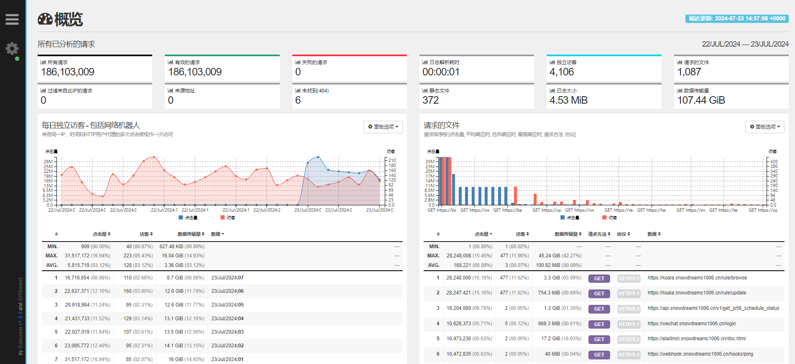
GoAccess是一款轻量级的日志分析工具，它通过简洁的命令行操作和直观的可视化界面，帮助用户深入理解网站流量和用户行为。它不仅可以展示基本的统计数据，如独立访客、请求的文件、404错误等，还能提供更深层次的分析，例如操作系统、浏览器、搜索引擎和HTTP响应代码等。
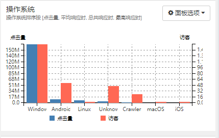
1.1.2. 从零开始：安装与配置GoAccess
GoAccess支持多种下载安装方式,推荐根据实际情况选择合适的方式自行安装.
如需获取软件压缩包,可私信评论回复关键词
goaccess自动发送.
下载安装
- 从源代码（tar.gz）下载并构建
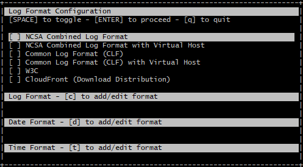
- Linux发行版的包管理器
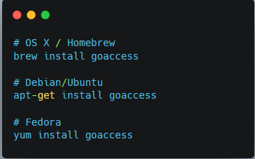
- Github开发版本
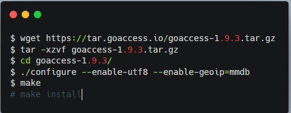
- Docker镜像容器
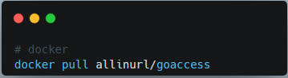
配置使用
一旦安装完毕后就要开始使用GoAccess,前提是先确认访问日志的格式,然后配置GoAccess以满足自定义需求.
如果您正在使用 Apache 或者 Nginx 的标准日志格式，配置 GoAccess 将十分简单。
# 常见的log-format格式,更详细自定义日志配置请考参考文档!
# COMBINED | 联合日志格式
# VCOMBINED | 支持虚拟主机的联合日志格式
# COMMON | 通用日志格式
# VCOMMON | 支持虚拟主机的通用日志格式
# W3C | W3C 扩展日志格式
# SQUID | Native Squid 日志格式
# CLOUDFRONT | 亚马逊 CloudFront Web 分布式系统
# CLOUDSTORAGE | 谷歌云存储
# AWSELB | 亚马逊弹性负载均衡
# AWSS3 | 亚马逊简单存储服务 (S3)
# goaccess命令启动
goaccess access.log --log-format=COMBINED
# docker方式启动
docker run --restart=always -d -p 7890:7890 \
-v "/srv/goaccess/data:/srv/data" \
-v "/srv/goaccess/html:/srv/report" \
-v "/var/log/apache2:/srv/logs" \
--name=goaccess allinurl/goaccess
当然,对于常见的web日志格式,GoAccess已经预设好了相应地日志配置,对此我们可以直接开箱即用.
1.1.3. 实战演练：分析Nginx日志
基本操作
要开始使用GoAccess分析Nginx日志，首先需要指定日志文件的路径。
通过命令行输入find / -name access.log找到nginx日志文件,常见位置可能为/var/log/nginx/access.log.
然后利用同样的方法可以获取GoAccess配置文件位置,最后再通过命令行输入goaccess -f /var/log/nginx/access.log，GoAccess将读取并分析指定的日志文件。
此外，还可以指定配置文件路径，以使用自定义的日志格式和显示选项。
# nginx日志文件
find / -name access.log
# /var/log/nginx/access.log
# goaccess配置文件
find / -name goaccess.conf
# /etc/goaccess/goaccess.conf
# 终端查看Nginx日志
goaccess /var/log/nginx/access.log --log-format=COMBINED

生成报告
GoAccess不仅能够实时显示分析结果，还能将结果保存为HTML格式的报告。通过命令goaccess -f /var/log/nginx/access.log -o /code/log/report.html，可以将分析结果输出到指定的HTML文件中。这样，用户可以通过Web浏览器查看更加美观和易于阅读的报告。
# 静态html报告
goaccess /var/log/nginx/access.log -o /var/www/html/report.html --log-format=COMBINED
# 实时html报告: websocket默认绑定 7890 端口
goaccess /var/log/nginx/access.log -o /var/www/html/report.html --log-format=COMBINED --real-time-html --daemonize
实时html报告需要配置nginx下websocket支持，动态实时获取日志数据 开启 7890 端口,以下示例仅供参考:
# 添加goaccess websocket 服务
location /wss {
proxy_redirect off;
proxy_pass http://127.0.0.1:7890;
proxy_http_version 1.1;
proxy_set_header Upgrade $http_upgrade;
proxy_set_header Connection "upgrade";
proxy_set_header Host $http_host;
}
查看页面设置小圆点是否为绿色,是表示websocket连接成功（title提示Connected to wss://web.example.com/wss:7890）
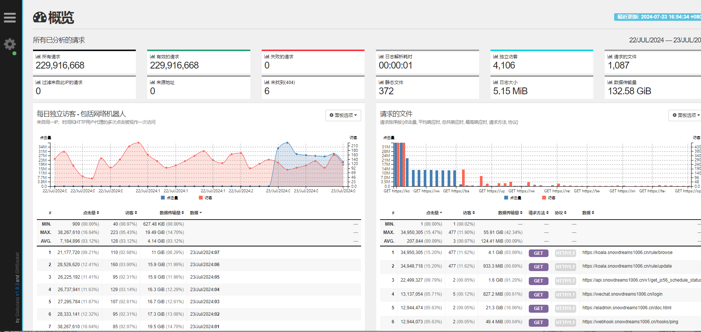
也可以通过浏览器-查看-网络看请求结果（状态代码: 101 Switching Protocols）
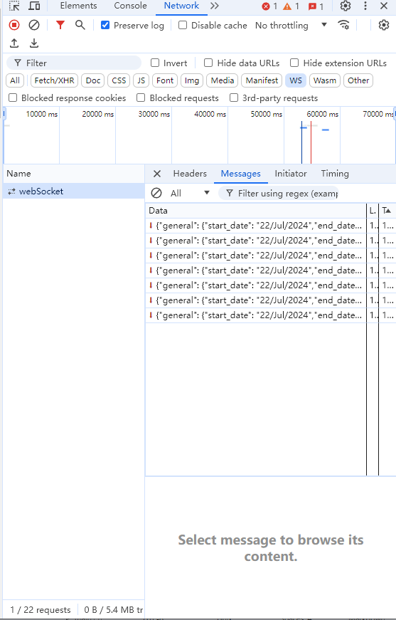
当然,如果未配置开启WebSocket支持,可以使用Cron任务脚本定时生成静态报告,模拟实时报告的效果!
1.1.4. 深入分析：挖掘数据背后的故事
GoAccess分析日志输出默认有十几项内容，按向下的箭头滚动页面查看。
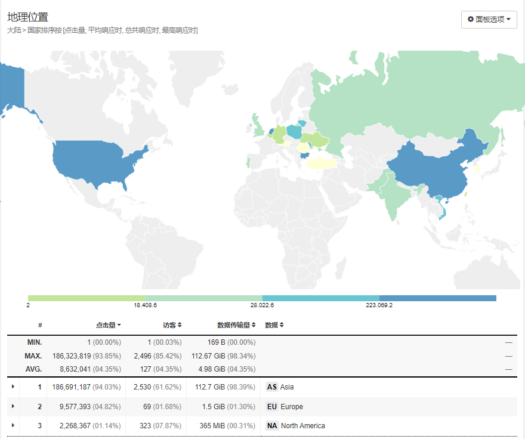
独立访客与请求文件
通过GoAccess，我们可以清晰地看到网站的独立访客数量和请求的文件类型。这些数据不仅帮助我们了解用户访问的频率，还能揭示用户对特定内容的偏好。例如，如果发现某类图片文件的请求量异常高，可能意味着用户对这些内容特别感兴趣。
404错误与文件未找到
404错误是网站运营中常见的问题，它不仅影响用户体验，还可能影响搜索引擎优化。通过GoAccess的分析，我们可以找出导致404错误的文件路径，进而优化网站结构，减少这类错误的发生。
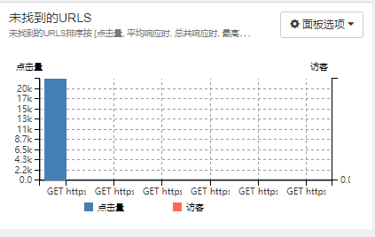
操作系统与浏览器
用户使用的操作系统和浏览器也是重要的分析指标。通过这些数据，我们可以了解用户的基本属性，并据此优化网站的兼容性和用户体验。比如，如果发现大多数用户使用的是Chrome浏览器，那么网站在设计时就应该优先考虑Chrome的兼容性。
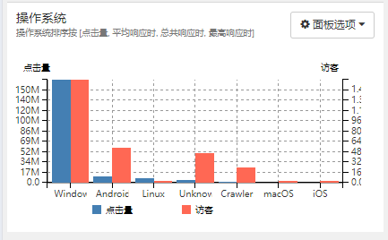
1.1.5. 结语
在这个数据驱动的时代，GoAccess不仅是一款工具，更是一座桥梁，连接着用户和网站运营者。通过它，我们可以更好地理解用户的行为，优化网站的设计，提升用户体验。让我们拥抱数据，用智慧点亮未来。

作者: 雪之梦技术驿站
来源: 雪之梦技术驿站
本文原创发布于「雪之梦技术驿站」,转载请注明出处,谢谢合作!